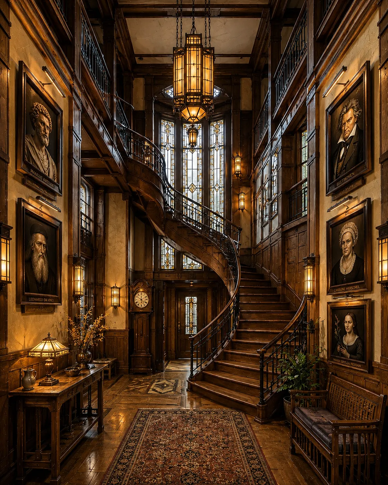

Marcus AureliusTo the Stoic ForumThe emperor who wrote the Meditations keeps this door. Leonardo da VinciTo the Dragon’s StudyThe polymath guards the room where the fiction lives. BeethovenTo the Music Room Caroline HerschelTo the ObservatoryComet hunter, and the first woman paid for her work in science. Maria Sibylla MerianTo the Naturalist’s RoomShe painted the metamorphosis of butterflies from life. The Grand StaircaseUp to the Library The Far DoorTo the Scriptorium, where the essays are written The ClockLately in the house: the newest essays